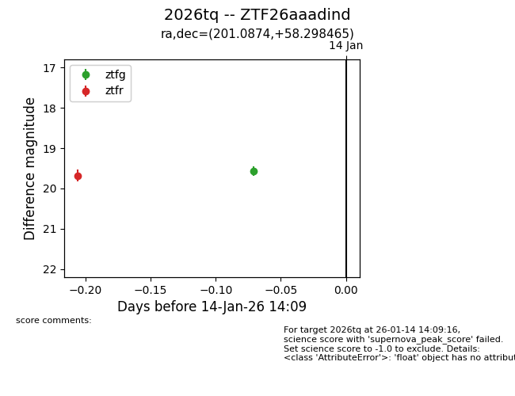
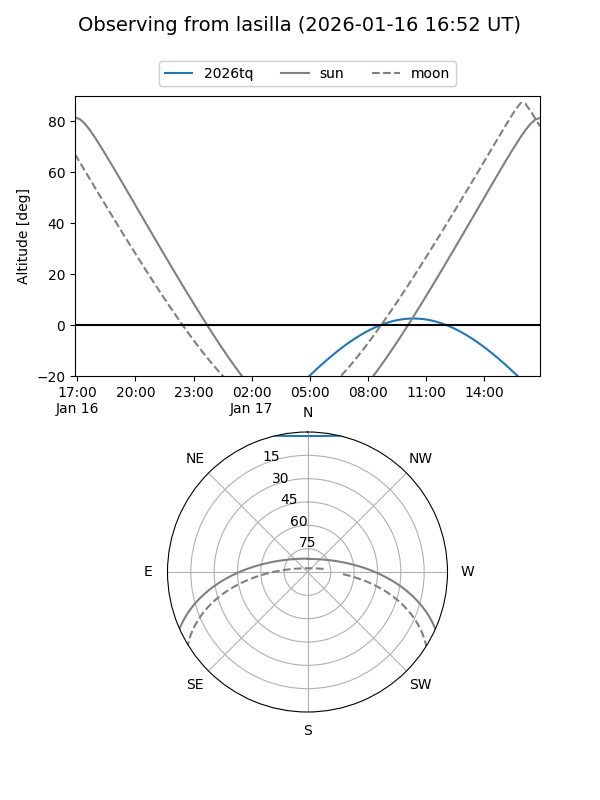
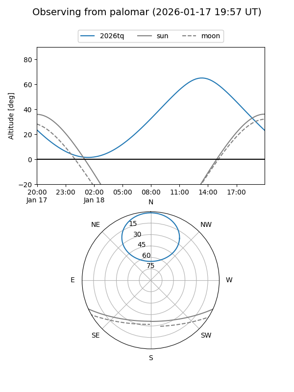
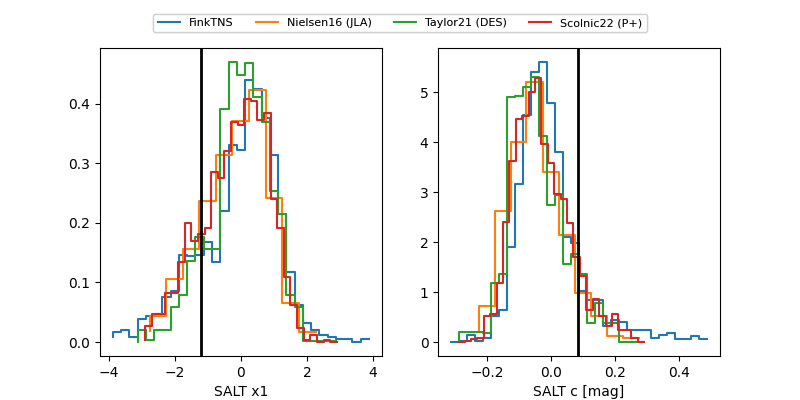

2026tq
Target 2026tq at 2026-01-16 13:10
Aliases and brokers:
FINK: link
Lasair: link
ALeRCE: link
TNS: link
YSE: link
alt names
ZTF26aaadind (ztf,fink_ztf)
2026tq (tns,yse)
Coordinates:
equatorial (ra, dec) = 201.0874,+58.29846
equatorial (HMS+DMS) = 13:24:20.98,+58:17:54.47
galactic (l, b) = (114.7034,+58.30090)
Flags:
Photometry:
last ztfg=19.57, ztfr=19.98
1 ztfg, 2 ztfr detections
Lightcurve

Visibility


Additional plots
